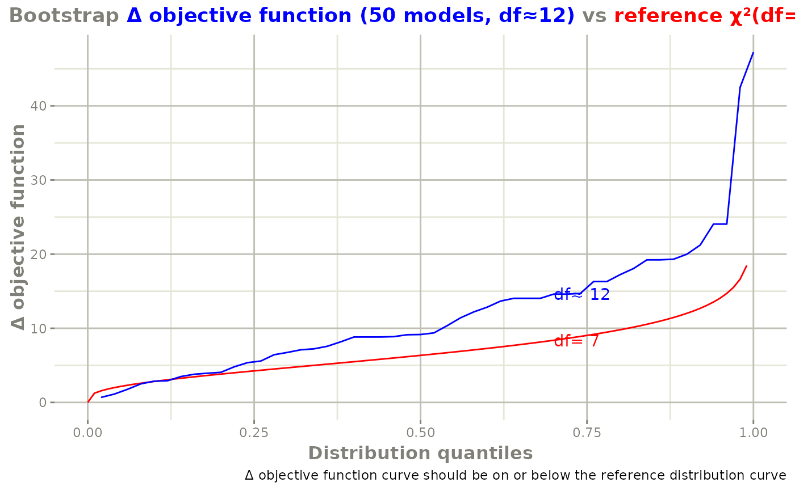

Bootstrap input dataset and rerun the model to get confidence bounds and aggregated parameters
bootstrapFit( fit, nboot = 200, nSampIndiv, stratVar, stdErrType = c("perc", "se"), ci = 0.95, pvalues = NULL, restart = FALSE, plotHist = FALSE, fitName = as.character(substitute(fit)) )
| fit | the nlmixr fit object |
|---|---|
| nboot | an integer giving the number of bootstrapped models to be fit; default value is 200 |
| nSampIndiv | an integer specifying the number of samples in each bootstrapped sample; default is the number of unique subjects in the original dataset |
| stratVar | Variable in the original dataset to stratify on; This is useful to distinguish between sparse and full sampling and other features you may wish to keep distinct in your bootstrap |
| stdErrType | This gives the standard error type for the updated standard errors; The current possibilities
are: |
| ci | Confidence interval level to calculate. Default is 0.95 for a 95% confidence interval |
| pvalues | a vector of pvalues indicating the probability of each subject to get selected; default value is NULL implying that probability of each subject is the same |
| restart | A boolean to try to restart an interrupted or
incomplete boostrap. By default this is |
| plotHist | A boolean indicating if a histogram plot to assess
how well the bootstrap is doing. By default this is turned off ( |
| fitName | is the fit name that is used for the name of the boostrap files. By default it is the fit provided though it could be something else. |
Vipul Mann, Matthew Fidler
# \donttest{ one.cmt <- function() { ini({ ## You may label each parameter with a comment tka <- 0.45 # Log Ka tcl <- 1 # Log Cl ## This works with interactive models ## You may also label the preceding line with label("label text") tv <- 3.45 label("log V") ## the label("Label name") works with all models eta.ka ~ 0.6 eta.cl ~ 0.3 eta.v ~ 0.1 add.sd <- 0.7 }) model({ ka <- exp(tka + eta.ka) cl <- exp(tcl + eta.cl) v <- exp(tv + eta.v) linCmt() ~ add(add.sd) }) } fit <- nlmixr(one.cmt, theo_sd, "focei")#>#> Key: U: Unscaled Parameters; X: Back-transformed parameters; G: Gill difference gradient approximation #> F: Forward difference gradient approximation #> C: Central difference gradient approximation #> M: Mixed forward and central difference gradient approximation #> Unscaled parameters for Omegas=chol(solve(omega)); #> Diagonals are transformed, as specified by foceiControl(diagXform=) #> |-----+---------------+-----------+-----------+-----------+-----------| #> | #| Objective Fun | tka | tcl | tv | add.sd | #> |.....................| o1 | o2 | o3 |...........| #> | 1| 133.56589 | -1.000 | -0.6333 | 1.000 | -0.8333 | #> |.....................| -0.5425 | -0.3992 | -0.1145 |...........| #> | U| 133.56589 | 0.4500 | 1.000 | 3.450 | 0.7000 | #> |.....................| 1.136 | 1.351 | 1.778 |...........| #> | X| 133.56589 | 1.568 | 2.718 | 31.50 | 0.7000 | #> |.....................| 1.136 | 1.351 | 1.778 |...........| #> | G| Gill Diff. | -0.9228 | -1.099 | -3.023 | 1.568 | #> |.....................| -11.78 | -35.38 | -34.77 |...........| #> | 2| 122.49084 | -0.9819 | -0.6118 | 1.059 | -0.8640 | #> |.....................| -0.3121 | 0.2928 | 0.5658 |...........| #> | U| 122.49084 | 0.4681 | 1.022 | 3.509 | 0.6893 | #> |.....................| 1.398 | 2.286 | 2.988 |...........| #> | X| 122.49084 | 1.597 | 2.777 | 33.42 | 0.6893 | #> |.....................| 1.398 | 2.286 | 2.988 |...........| #> | F| Forward Diff. | -0.9434 | 13.03 | 68.74 | -4.930 | #> |.....................| 14.11 | 16.61 | 13.87 |...........| #> | 3| 685.10853 | -0.9590 | -0.7884 | 0.09939 | -0.8088 | #> |.....................| -0.3963 | 0.4112 | 0.7175 |...........| #> | U| 685.10853 | 0.4910 | 0.8449 | 2.549 | 0.7086 | #> |.....................| 1.302 | 2.446 | 3.258 |...........| #> | X| 685.10853 | 1.634 | 2.328 | 12.80 | 0.7086 | #> |.....................| 1.302 | 2.446 | 3.258 |...........| #> | 4| 121.07098 | -0.9807 | -0.6293 | 0.9672 | -0.8574 | #> |.....................| -0.3309 | 0.2706 | 0.5472 |...........| #> | U| 121.07098 | 0.4693 | 1.004 | 3.417 | 0.6916 | #> |.....................| 1.377 | 2.256 | 2.955 |...........| #> | X| 121.07098 | 1.599 | 2.729 | 30.48 | 0.6916 | #> |.....................| 1.377 | 2.256 | 2.955 |...........| #> | F| Forward Diff. | 2.638 | -7.742 | -54.49 | -3.121 | #> |.....................| 12.87 | 15.53 | 9.493 |...........| #> | 5| 118.39726 | -0.9856 | -0.6250 | 1.019 | -0.8462 | #> |.....................| -0.3736 | 0.2119 | 0.5034 |...........| #> | U| 118.39726 | 0.4644 | 1.008 | 3.469 | 0.6955 | #> |.....................| 1.328 | 2.177 | 2.877 |...........| #> | X| 118.39726 | 1.591 | 2.741 | 32.09 | 0.6955 | #> |.....................| 1.328 | 2.177 | 2.877 |...........| #> | F| Forward Diff. | 0.03982 | 0.3472 | 10.92 | -1.065 | #> |.....................| 7.258 | 11.32 | 6.677 |...........| #> | 6| 117.98727 | -0.9862 | -0.6227 | 0.9740 | -0.8417 | #> |.....................| -0.4136 | 0.1435 | 0.4620 |...........| #> | U| 117.98727 | 0.4638 | 1.011 | 3.424 | 0.6971 | #> |.....................| 1.283 | 2.084 | 2.803 |...........| #> | X| 117.98727 | 1.590 | 2.747 | 30.69 | 0.6971 | #> |.....................| 1.283 | 2.084 | 2.803 |...........| #> | F| Forward Diff. | 1.116 | -3.218 | -38.20 | 0.7407 | #> |.....................| 3.039 | 7.258 | 4.321 |...........| #> | 7| 117.00814 | -0.9847 | -0.6227 | 1.026 | -0.8594 | #> |.....................| -0.4218 | 0.07312 | 0.4182 |...........| #> | U| 117.00814 | 0.4653 | 1.011 | 3.476 | 0.6909 | #> |.....................| 1.273 | 1.989 | 2.726 |...........| #> | X| 117.00814 | 1.592 | 2.747 | 32.34 | 0.6909 | #> |.....................| 1.273 | 1.989 | 2.726 |...........| #> | F| Forward Diff. | -0.2629 | 0.7891 | 16.82 | -1.334 | #> |.....................| 1.781 | 2.066 | 1.822 |...........| #> | 8| 116.99951 | -0.9848 | -0.6091 | 1.002 | -0.8443 | #> |.....................| -0.4153 | 0.01193 | 0.3462 |...........| #> | U| 116.99951 | 0.4652 | 1.024 | 3.452 | 0.6962 | #> |.....................| 1.281 | 1.907 | 2.597 |...........| #> | X| 116.99951 | 1.592 | 2.785 | 31.56 | 0.6962 | #> |.....................| 1.281 | 1.907 | 2.597 |...........| #> | F| Forward Diff. | 0.3528 | 2.909 | -6.956 | 0.6620 | #> |.....................| 3.012 | -2.527 | -2.918 |...........| #> | 9| 116.95329 | -0.9876 | -0.6388 | 1.014 | -0.8432 | #> |.....................| -0.4529 | 0.01415 | 0.3526 |...........| #> | U| 116.95329 | 0.4624 | 0.9945 | 3.464 | 0.6965 | #> |.....................| 1.238 | 1.910 | 2.609 |...........| #> | X| 116.95329 | 1.588 | 2.703 | 31.94 | 0.6965 | #> |.....................| 1.238 | 1.910 | 2.609 |...........| #> | F| Forward Diff. | -0.3099 | -4.571 | 2.225 | 0.9442 | #> |.....................| -2.111 | -2.368 | -2.265 |...........| #> | 10| 116.90989 | -0.9864 | -0.6001 | 1.006 | -0.8520 | #> |.....................| -0.4576 | 0.03079 | 0.3763 |...........| #> | U| 116.90989 | 0.4636 | 1.033 | 3.456 | 0.6935 | #> |.....................| 1.233 | 1.932 | 2.651 |...........| #> | X| 116.90989 | 1.590 | 2.810 | 31.69 | 0.6935 | #> |.....................| 1.233 | 1.932 | 2.651 |...........| #> | F| Forward Diff. | 0.09300 | 5.755 | -2.291 | -0.04211 | #> |.....................| -1.852 | -0.8516 | -1.085 |...........| #> | 11| 116.84070 | -0.9857 | -0.6271 | 1.013 | -0.8548 | #> |.....................| -0.4203 | 0.02920 | 0.3940 |...........| #> | U| 116.8407 | 0.4643 | 1.006 | 3.463 | 0.6925 | #> |.....................| 1.275 | 1.930 | 2.683 |...........| #> | X| 116.8407 | 1.591 | 2.735 | 31.92 | 0.6925 | #> |.....................| 1.275 | 1.930 | 2.683 |...........| #> | F| Forward Diff. | -0.01742 | -1.457 | 2.870 | -0.5379 | #> |.....................| 2.018 | -0.9786 | -0.2287 |...........| #> | 12| 116.91217 | -0.9860 | -0.6303 | 1.002 | -0.8156 | #> |.....................| -0.4385 | 0.05061 | 0.3883 |...........| #> | U| 116.91217 | 0.4640 | 1.003 | 3.452 | 0.7062 | #> |.....................| 1.254 | 1.959 | 2.672 |...........| #> | X| 116.91217 | 1.590 | 2.727 | 31.55 | 0.7062 | #> |.....................| 1.254 | 1.959 | 2.672 |...........| #> | 13| 116.84102 | -0.9856 | -0.6216 | 1.002 | -0.8528 | #> |.....................| -0.4278 | 0.03288 | 0.3949 |...........| #> | U| 116.84102 | 0.4644 | 1.012 | 3.452 | 0.6932 | #> |.....................| 1.267 | 1.935 | 2.684 |...........| #> | X| 116.84102 | 1.591 | 2.750 | 31.57 | 0.6932 | #> |.....................| 1.267 | 1.935 | 2.684 |...........| #> | 14| 116.82589 | -0.9856 | -0.6244 | 1.008 | -0.8538 | #> |.....................| -0.4240 | 0.03103 | 0.3944 |...........| #> | U| 116.82589 | 0.4644 | 1.009 | 3.458 | 0.6928 | #> |.....................| 1.271 | 1.933 | 2.683 |...........| #> | X| 116.82589 | 1.591 | 2.743 | 31.75 | 0.6928 | #> |.....................| 1.271 | 1.933 | 2.683 |...........| #> | F| Forward Diff. | 0.1123 | -1.009 | -2.046 | -0.5746 | #> |.....................| 1.758 | -0.8390 | -0.3156 |...........| #> | 15| 116.81762 | -0.9859 | -0.6219 | 1.013 | -0.8524 | #> |.....................| -0.4283 | 0.03305 | 0.3952 |...........| #> | U| 116.81762 | 0.4641 | 1.011 | 3.463 | 0.6933 | #> |.....................| 1.266 | 1.935 | 2.685 |...........| #> | X| 116.81762 | 1.591 | 2.749 | 31.90 | 0.6933 | #> |.....................| 1.266 | 1.935 | 2.685 |...........| #> | F| Forward Diff. | -0.01800 | -0.02030 | 2.847 | -0.2739 | #> |.....................| 1.145 | -0.7092 | -0.1303 |...........| #> | 16| 116.81069 | -0.9860 | -0.6218 | 1.007 | -0.8497 | #> |.....................| -0.4320 | 0.03562 | 0.3951 |...........| #> | U| 116.81069 | 0.4640 | 1.011 | 3.457 | 0.6943 | #> |.....................| 1.262 | 1.939 | 2.684 |...........| #> | X| 116.81069 | 1.590 | 2.750 | 31.74 | 0.6943 | #> |.....................| 1.262 | 1.939 | 2.684 |...........| #> | F| Forward Diff. | 0.08807 | -0.3069 | -2.153 | -0.1145 | #> |.....................| 0.7425 | -0.5262 | -0.2308 |...........| #> | 17| 116.80533 | -0.9865 | -0.6218 | 1.011 | -0.8479 | #> |.....................| -0.4365 | 0.03968 | 0.3931 |...........| #> | U| 116.80533 | 0.4635 | 1.012 | 3.461 | 0.6949 | #> |.....................| 1.257 | 1.944 | 2.681 |...........| #> | X| 116.80533 | 1.590 | 2.750 | 31.84 | 0.6949 | #> |.....................| 1.257 | 1.944 | 2.681 |...........| #> | F| Forward Diff. | -0.03522 | -0.08197 | 0.9961 | 0.04165 | #> |.....................| 0.1105 | -0.3350 | -0.1979 |...........| #> | 18| 116.80465 | -0.9855 | -0.6206 | 1.009 | -0.8504 | #> |.....................| -0.4398 | 0.04513 | 0.3914 |...........| #> | U| 116.80465 | 0.4645 | 1.013 | 3.459 | 0.6940 | #> |.....................| 1.253 | 1.952 | 2.678 |...........| #> | X| 116.80465 | 1.591 | 2.753 | 31.79 | 0.6940 | #> |.....................| 1.253 | 1.952 | 2.678 |...........| #> | F| Forward Diff. | 0.04682 | 0.1881 | -0.5119 | -0.2081 | #> |.....................| -0.2275 | 0.03593 | -0.2268 |...........| #> | 19| 116.80465 | -0.9855 | -0.6206 | 1.009 | -0.8504 | #> |.....................| -0.4398 | 0.04513 | 0.3914 |...........| #> | U| 116.80465 | 0.4645 | 1.013 | 3.459 | 0.6940 | #> |.....................| 1.253 | 1.952 | 2.678 |...........| #> | X| 116.80465 | 1.591 | 2.753 | 31.79 | 0.6940 | #> |.....................| 1.253 | 1.952 | 2.678 |...........| #> calculating covariance matrix #> done#>#>#> Warning: initial ETAs were nudged; (can control by foceiControl(etaNudge=.))#> Warning: ETAs were reset to zero during optimization; (Can control by foceiControl(resetEtaP=.))#> Warning: gradient problems with initial estimate and covariance; see $scaleInfobootstrapFit(fit, nboot = 5, restart = TRUE) # overwrites any of the existing data or model files#>#> ── Running nlmixr for model index: ── 1 ────────────────────────────────────────#> done#>#> ── Running nlmixr for model index: ── 2 ────────────────────────────────────────#> done#>#> ── Running nlmixr for model index: ── 3 ────────────────────────────────────────#> done#>#> ── Running nlmixr for model index: ── 4 ────────────────────────────────────────#> done#>#> ── Running nlmixr for model index: ── 5 ────────────────────────────────────────#> done#> fitbootstrapFit(fit, nboot = 7) # resumes fitting using the stored data and model files#> ✔ resuming bootstrap data sampling using data at ./nlmixrBootstrapCache_fit_061f38faa182b0261a7931151c83b5da#> ✔ resuming bootstrap model fitting using data and models stored at /home/matt/src/nlmixr/docs/reference/nlmixrBootstrapCache_fit_061f38faa182b0261a7931151c83b5da#>#> ── Running nlmixr for model index: ── 6 ────────────────────────────────────────#> done#>#> ── Running nlmixr for model index: ── 7 ────────────────────────────────────────#> done#> fit# Note this resumes because the total number of bootstrap samples is not 50 bootstrapFit(fit, nboot=50)#> ✔ resuming bootstrap data sampling using data at ./nlmixrBootstrapCache_fit_061f38faa182b0261a7931151c83b5da#> ✔ resuming bootstrap model fitting using data and models stored at /home/matt/src/nlmixr/docs/reference/nlmixrBootstrapCache_fit_061f38faa182b0261a7931151c83b5da#>#> ── Running nlmixr for model index: ── 8 ────────────────────────────────────────#> done#>#> ── Running nlmixr for model index: ── 9 ────────────────────────────────────────#> done#>#> ── Running nlmixr for model index: ── 10 ───────────────────────────────────────#> done#>#> ── Running nlmixr for model index: ── 11 ───────────────────────────────────────#> done#>#> ── Running nlmixr for model index: ── 12 ───────────────────────────────────────#> done#>#> ── Running nlmixr for model index: ── 13 ───────────────────────────────────────#> done#>#> ── Running nlmixr for model index: ── 14 ───────────────────────────────────────#> done#>#> ── Running nlmixr for model index: ── 15 ───────────────────────────────────────#> done#>#> ── Running nlmixr for model index: ── 16 ───────────────────────────────────────#> done#>#> ── Running nlmixr for model index: ── 17 ───────────────────────────────────────#> done#>#> ── Running nlmixr for model index: ── 18 ───────────────────────────────────────#> done#>#> ── Running nlmixr for model index: ── 19 ───────────────────────────────────────#> done#>#> ── Running nlmixr for model index: ── 20 ───────────────────────────────────────#> done#>#> ── Running nlmixr for model index: ── 21 ───────────────────────────────────────#> done#>#> ── Running nlmixr for model index: ── 22 ───────────────────────────────────────#> done#>#> ── Running nlmixr for model index: ── 23 ───────────────────────────────────────#> done#>#> ── Running nlmixr for model index: ── 24 ───────────────────────────────────────#> done#>#> ── Running nlmixr for model index: ── 25 ───────────────────────────────────────#> done#>#> ── Running nlmixr for model index: ── 26 ───────────────────────────────────────#> done#>#> ── Running nlmixr for model index: ── 27 ───────────────────────────────────────#> done#>#> ── Running nlmixr for model index: ── 28 ───────────────────────────────────────#> done#>#> ── Running nlmixr for model index: ── 29 ───────────────────────────────────────#> done#>#> ── Running nlmixr for model index: ── 30 ───────────────────────────────────────#> done#>#> ── Running nlmixr for model index: ── 31 ───────────────────────────────────────#> done#>#> ── Running nlmixr for model index: ── 32 ───────────────────────────────────────#> done#>#> ── Running nlmixr for model index: ── 33 ───────────────────────────────────────#> done#>#> ── Running nlmixr for model index: ── 34 ───────────────────────────────────────#> done#>#> ── Running nlmixr for model index: ── 35 ───────────────────────────────────────#> done#>#> ── Running nlmixr for model index: ── 36 ───────────────────────────────────────#> done#>#> ── Running nlmixr for model index: ── 37 ───────────────────────────────────────#> done#>#> ── Running nlmixr for model index: ── 38 ───────────────────────────────────────#> done#>#> ── Running nlmixr for model index: ── 39 ───────────────────────────────────────#> done#>#> ── Running nlmixr for model index: ── 40 ───────────────────────────────────────#> done#>#> ── Running nlmixr for model index: ── 41 ───────────────────────────────────────#> done#>#> ── Running nlmixr for model index: ── 42 ───────────────────────────────────────#> done#>#> ── Running nlmixr for model index: ── 43 ───────────────────────────────────────#> done#>#> ── Running nlmixr for model index: ── 44 ───────────────────────────────────────#> done#>#> ── Running nlmixr for model index: ── 45 ───────────────────────────────────────#> done#>#> ── Running nlmixr for model index: ── 46 ───────────────────────────────────────#> done#>#> ── Running nlmixr for model index: ── 47 ───────────────────────────────────────#> done#>#> ── Running nlmixr for model index: ── 48 ───────────────────────────────────────#> done#>#> ── Running nlmixr for model index: ── 49 ───────────────────────────────────────#> done#>#> ── Running nlmixr for model index: ── 50 ───────────────────────────────────────#> done#> fit# Note the boostrap standard error and variance/covariance matrix is retained. # If you wish to switch back you can change the covariance matrix by setCov(fit,"r,s")#> fit#> fit# This change will affect any simulations with uncertainty in their parameters # You may also do a chi-square diagnostic plot check for the bootstrap with bootplot(fit)#> ✔ resuming bootstrap data sampling using data at ./nlmixrBootstrapCache_fit_061f38faa182b0261a7931151c83b5da#> ✔ resuming bootstrap model fitting using data and models stored at /home/matt/src/nlmixr/docs/reference/nlmixrBootstrapCache_fit_061f38faa182b0261a7931151c83b5da#>#> ── Loading/Calculating Δ Objective function ────────────────────────────────────#>#>#> ── Running bootstrap estimates on original data for model index: 1 ─────────────#> Warning: initial ETAs were nudged; (can control by foceiControl(etaNudge=.))#>#>#> ── Running bootstrap estimates on original data for model index: 2 ─────────────#> Warning: initial ETAs were nudged; (can control by foceiControl(etaNudge=.))#>#>#> ── Running bootstrap estimates on original data for model index: 3 ─────────────#> Warning: initial ETAs were nudged; (can control by foceiControl(etaNudge=.))#>#>#> ── Running bootstrap estimates on original data for model index: 4 ─────────────#> Warning: initial ETAs were nudged; (can control by foceiControl(etaNudge=.))#>#>#> ── Running bootstrap estimates on original data for model index: 5 ─────────────#> Warning: initial ETAs were nudged; (can control by foceiControl(etaNudge=.))#>#>#> ── Running bootstrap estimates on original data for model index: 6 ─────────────#> Warning: initial ETAs were nudged; (can control by foceiControl(etaNudge=.))#>#>#> ── Running bootstrap estimates on original data for model index: 7 ─────────────#> Warning: initial ETAs were nudged; (can control by foceiControl(etaNudge=.))#>#>#> ── Running bootstrap estimates on original data for model index: 8 ─────────────#> Warning: initial ETAs were nudged; (can control by foceiControl(etaNudge=.))#>#>#> ── Running bootstrap estimates on original data for model index: 9 ─────────────#> Warning: initial ETAs were nudged; (can control by foceiControl(etaNudge=.))#>#>#> ── Running bootstrap estimates on original data for model index: 10 ────────────#> Warning: initial ETAs were nudged; (can control by foceiControl(etaNudge=.))#>#>#> ── Running bootstrap estimates on original data for model index: 11 ────────────#> Warning: initial ETAs were nudged; (can control by foceiControl(etaNudge=.))#>#>#> ── Running bootstrap estimates on original data for model index: 12 ────────────#> Warning: initial ETAs were nudged; (can control by foceiControl(etaNudge=.))#>#>#> ── Running bootstrap estimates on original data for model index: 13 ────────────#> Warning: initial ETAs were nudged; (can control by foceiControl(etaNudge=.))#>#>#> ── Running bootstrap estimates on original data for model index: 14 ────────────#> Warning: initial ETAs were nudged; (can control by foceiControl(etaNudge=.))#>#>#> ── Running bootstrap estimates on original data for model index: 15 ────────────#> Warning: initial ETAs were nudged; (can control by foceiControl(etaNudge=.))#>#>#> ── Running bootstrap estimates on original data for model index: 16 ────────────#> Warning: initial ETAs were nudged; (can control by foceiControl(etaNudge=.))#>#>#> ── Running bootstrap estimates on original data for model index: 17 ────────────#> Warning: initial ETAs were nudged; (can control by foceiControl(etaNudge=.))#>#>#> ── Running bootstrap estimates on original data for model index: 18 ────────────#> Warning: initial ETAs were nudged; (can control by foceiControl(etaNudge=.))#>#>#> ── Running bootstrap estimates on original data for model index: 19 ────────────#> Warning: initial ETAs were nudged; (can control by foceiControl(etaNudge=.))#>#>#> ── Running bootstrap estimates on original data for model index: 20 ────────────#> Warning: initial ETAs were nudged; (can control by foceiControl(etaNudge=.))#>#>#> ── Running bootstrap estimates on original data for model index: 21 ────────────#> Warning: initial ETAs were nudged; (can control by foceiControl(etaNudge=.))#>#>#> ── Running bootstrap estimates on original data for model index: 22 ────────────#> Warning: initial ETAs were nudged; (can control by foceiControl(etaNudge=.))#>#>#> ── Running bootstrap estimates on original data for model index: 23 ────────────#> Warning: initial ETAs were nudged; (can control by foceiControl(etaNudge=.))#>#>#> ── Running bootstrap estimates on original data for model index: 24 ────────────#> Warning: initial ETAs were nudged; (can control by foceiControl(etaNudge=.))#>#>#> ── Running bootstrap estimates on original data for model index: 25 ────────────#> Warning: initial ETAs were nudged; (can control by foceiControl(etaNudge=.))#>#>#> ── Running bootstrap estimates on original data for model index: 26 ────────────#> Warning: initial ETAs were nudged; (can control by foceiControl(etaNudge=.))#>#>#> ── Running bootstrap estimates on original data for model index: 27 ────────────#> Warning: initial ETAs were nudged; (can control by foceiControl(etaNudge=.))#>#>#> ── Running bootstrap estimates on original data for model index: 28 ────────────#> Warning: initial ETAs were nudged; (can control by foceiControl(etaNudge=.))#>#>#> ── Running bootstrap estimates on original data for model index: 29 ────────────#> Warning: initial ETAs were nudged; (can control by foceiControl(etaNudge=.))#>#>#> ── Running bootstrap estimates on original data for model index: 30 ────────────#> Warning: initial ETAs were nudged; (can control by foceiControl(etaNudge=.))#>#>#> ── Running bootstrap estimates on original data for model index: 31 ────────────#> Warning: initial ETAs were nudged; (can control by foceiControl(etaNudge=.))#>#>#> ── Running bootstrap estimates on original data for model index: 32 ────────────#> Warning: initial ETAs were nudged; (can control by foceiControl(etaNudge=.))#>#>#> ── Running bootstrap estimates on original data for model index: 33 ────────────#> Warning: initial ETAs were nudged; (can control by foceiControl(etaNudge=.))#>#>#> ── Running bootstrap estimates on original data for model index: 34 ────────────#> Warning: initial ETAs were nudged; (can control by foceiControl(etaNudge=.))#>#>#> ── Running bootstrap estimates on original data for model index: 35 ────────────#> Warning: initial ETAs were nudged; (can control by foceiControl(etaNudge=.))#>#>#> ── Running bootstrap estimates on original data for model index: 36 ────────────#> Warning: initial ETAs were nudged; (can control by foceiControl(etaNudge=.))#>#>#> ── Running bootstrap estimates on original data for model index: 37 ────────────#> Warning: initial ETAs were nudged; (can control by foceiControl(etaNudge=.))#>#>#> ── Running bootstrap estimates on original data for model index: 38 ────────────#> Warning: initial ETAs were nudged; (can control by foceiControl(etaNudge=.))#>#>#> ── Running bootstrap estimates on original data for model index: 39 ────────────#> Warning: initial ETAs were nudged; (can control by foceiControl(etaNudge=.))#>#>#> ── Running bootstrap estimates on original data for model index: 40 ────────────#> Warning: initial ETAs were nudged; (can control by foceiControl(etaNudge=.))#>#>#> ── Running bootstrap estimates on original data for model index: 41 ────────────#> Warning: initial ETAs were nudged; (can control by foceiControl(etaNudge=.))#>#>#> ── Running bootstrap estimates on original data for model index: 42 ────────────#> Warning: initial ETAs were nudged; (can control by foceiControl(etaNudge=.))#>#>#> ── Running bootstrap estimates on original data for model index: 43 ────────────#> Warning: initial ETAs were nudged; (can control by foceiControl(etaNudge=.))#>#>#> ── Running bootstrap estimates on original data for model index: 44 ────────────#> Warning: initial ETAs were nudged; (can control by foceiControl(etaNudge=.))#>#>#> ── Running bootstrap estimates on original data for model index: 45 ────────────#> Warning: initial ETAs were nudged; (can control by foceiControl(etaNudge=.))#>#>#> ── Running bootstrap estimates on original data for model index: 46 ────────────#> Warning: initial ETAs were nudged; (can control by foceiControl(etaNudge=.))#>#>#> ── Running bootstrap estimates on original data for model index: 47 ────────────#> Warning: initial ETAs were nudged; (can control by foceiControl(etaNudge=.))#>#>#> ── Running bootstrap estimates on original data for model index: 48 ────────────#> Warning: initial ETAs were nudged; (can control by foceiControl(etaNudge=.))#>#>#> ── Running bootstrap estimates on original data for model index: 49 ────────────#> Warning: initial ETAs were nudged; (can control by foceiControl(etaNudge=.))#>#>#> ── Running bootstrap estimates on original data for model index: 50 ────────────#> Warning: initial ETAs were nudged; (can control by foceiControl(etaNudge=.))#>#> x# }